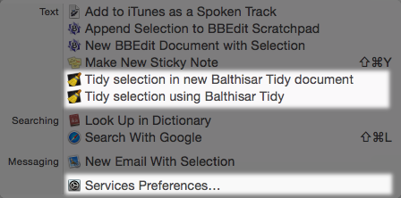
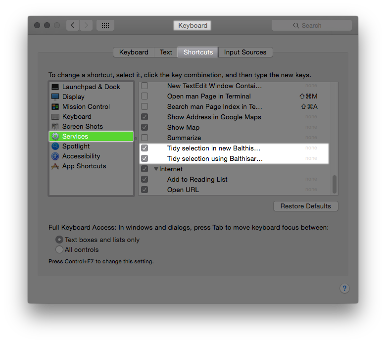

Use Balthisar Tidy as a System Service
Balthisar Tidy offers one or more Mac OS X System Services, depending on your version of Mac OS X.
- Tidy selection in new Balthisar Tidy document
- This Service starts Balthisar Tidy (if it’s not already started) and
creates a new, untitled document with the selected text.
This Service is available on all versions of Mac OS X on which Balthisar Tidy runs.
- Tidy selection with Balthisar Tidy
- Using the Preferences from Balthisar Tidy, this service will
perform Tidying in place. You don’t even have to start Balthisar Tidy to
use it. Note that this service will always produce a full HTML document, ignoring
the
show-body-onlysetting in Preferences.Because of Apple's sandbox security system, this System Service is only available on Mac OS X 10.9 and above.
- Tidy selection with Balthisar Tidy (body only)
- Using the Preferences from Balthisar Tidy, this service will
perform Tidying in place. You don’t even have to start Balthisar Tidy to
use it. This service is convenient for tidying snippets of code without producing
a complete HTML document.
Note that Balthisar Tidy has no idea of your file’s original indentation; Balthisar Tidy will return indented text (if configured to do so), but its base indentation will be zero. You may have to use your application’s block indent feature once your text is tidy'd.
Because of Apple's sandbox security system, this System Service is only available on Mac OS X 10.9 and above.
How to Use System Services
When Balthisar Tidy’s Services are enabled (see below), they can be used from nearly any Mac OS X application. Simply select the text that you would like to use the service on, and then use the Application menu (for example, in BBEdit, the Application menu is called BBEdit), Services submenu. The list of apple Services will appear in the menu, as shown here:

If Balthisar Tidy’s Services do not appear, then you will have to set them up first.
Setting up System Services
It’s important to start Balthisar Tidy at least one time before setting up Services. This allows Mac OS X to know that Balthisar Tidy is able to provide Services.
You configure Balthisar Tidy’s Services in the System Preferences application using the Keyboard control panel as highlighted below.

Alternatively you can use the Services Preferences… shortcut in an application services menu as illustrated in the previous section.
In System Preferences, Keyboard control panel, Shortcuts pane, Services item in the list, you can see all of the installed Services and enable them with the corresponding check box, as shown here.
